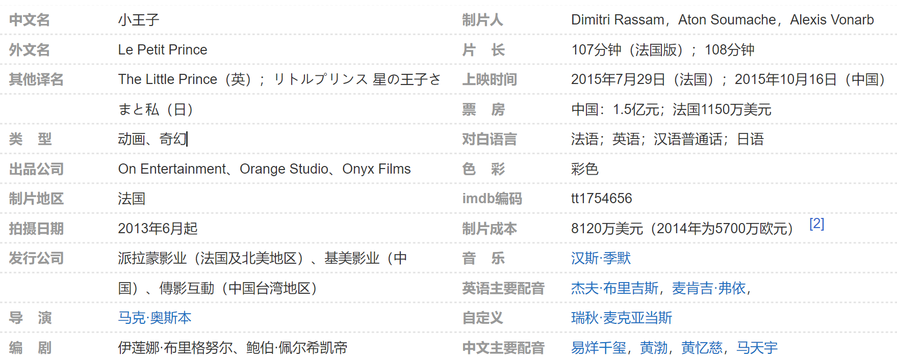

《小王子》是法国On Entertainment2015年出品的奇幻动画电影，由马克·奥斯本执导，杰夫·布里吉斯、麦肯基·弗依等担任英文版主要配音，易烊千玺、黄渤、黄忆慈、周迅、马天宇等担任中文版主要配音。 [1] 该片改编自安东尼·德·圣-埃克苏佩里创作的同名文学作品，讲述了一个小女孩偶然与年老的飞行员相识，并根据他回忆的指引开启了探索小王子世界的旅程
该片改编自安东尼·德·圣-埃克苏佩里创作的同名文学作品，讲述了一个小女孩偶然与年老的飞行员相识，并根据他回忆的指引开启了探索小王子世界的旅程。
 首页
首页